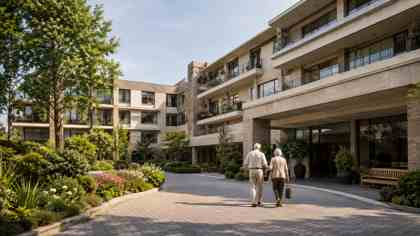

Las Condes
Residencia Los Jardines
Entorno residencial, atención permanente y actividades para una vida activa.
EnfermeríaJardínVisitas
Portal de residencias y servicios para adultos mayores
Encuentra residencias, especialistas y apoyos confiables para una vida plena, segura y acompañada.

Directorio
Ejemplos de cómo se verá el directorio, con imágenes referenciales.

Entorno residencial, atención permanente y actividades para una vida activa.
Ubicación conectada, acompañamiento cercano y atención personalizada.
Ambiente familiar, actividades grupales y coordinación con especialistas.
Cómo funciona
Filtra por comuna y necesidades principales.
Revisa servicios, instalaciones y características.
Solicita información o coordina una visita.
Más que un directorio
Profesionales, equipamiento y soluciones complementarias para el cuidado de adultos mayores.
Conocer serviciosResidencias fundadoras
Estamos invitando a residencias seleccionadas a participar en la primera etapa de Red Senior, sin costo de incorporación durante la validación inicial.
Déjanos tus datos. Esta maqueta no envía información real.